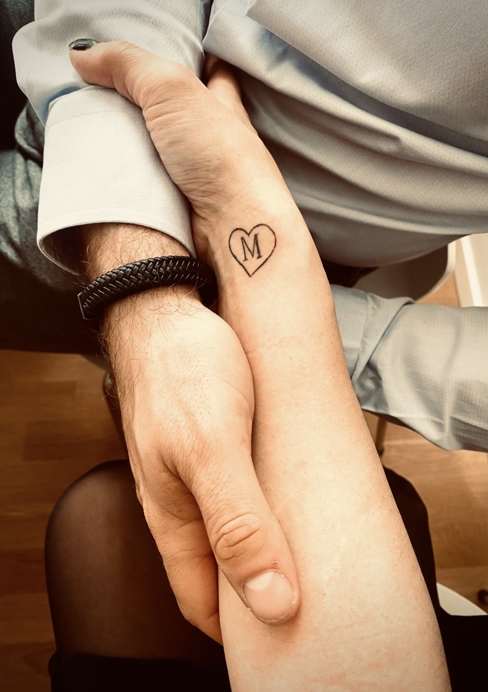

Önskar det fanns tillräckliga ord att beskriva hur fantastisk jag tycker du är.
Hur förtjust jag är i alla dina små personligheter som gömmer sig i den manligaste av kroppar.
Att du alltid kommer vara allt annat än fasaden du visar.
Tanten som älskar mint, pojken som garvar åt pruttskämt och framförallt killen som tog revansch på sig själv och ändrade både det yttre som det inre.
Tänk att i det korrekta, det samlade och ordnade så såg jag något helt annat.
Fortsättning följer…